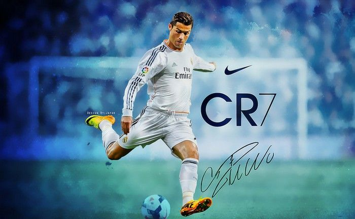

Cristiano Ronaldo

Cristiano celebrating his goal
Cristiano's Career Achievements
- 2007 -08Goalscoring: The European Golden Shoe was awarded to Christiano Ronaldo who was the top goalscorer in Europe.
- 2017 -18UEFA Champions League top scorer: Christiano Ronaldo scord 15 goals in the UEFA Champions League.
- All timeRonaldo is the UEFA Champions league all-time top goalscorer with 130 goals while Lionel Messi is second with 115 to his name.up
- 2014 _15La Liga top scorer: Cristiano Ronaldo scored 48 goals in 35 matches
- 2007 -08Premier League top scorer: Ronaldo scored 31 goals in 34 matches
- 2008International man of the match awards Luzhniki Stadium, Moscow, Russia, opponent Chelsea competion 2008 UEFA champions league
- 2010International man of the match awards Cape Town Stadium, Cape Town, South Africa opponent Brazil competition Fifa world cup
- 2017International man of the match awards Otkritie Arena, Moscow, Russia opponent Russia 2017 FIFA Confederations Cup
- 2018International man of the match awards Fisht Olympic Stadium, Sochi, Russia opponent Spain 2018 FIFA World Cup
- 2019International man of the match awards Estádio do Dragão, Porto, Portugal opponent Switzerland 2019 UEFA Nations League Finals